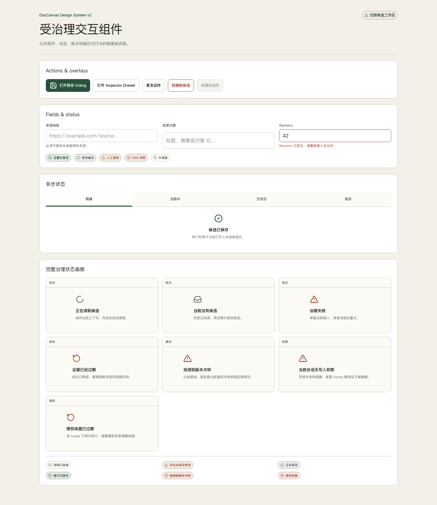

1. 执行摘要
DocCanvas 已从“把三份 Markdown 画成房子”的文档画布，演进为一个证据治理型 AI 产品工作台：它把来源、知识、方案、Blueprint、编译产物、运行证据与修订历史串成可追溯对象链。
当前能够证明什么
本地源码在 Chromium、WebKit、390px mobile、键盘、CRUD/CAS、Canvas、导出、WCAG AA 自动化门下通过。它不能替代真实用户主持式测试、真实读屏设备、候选镜像验证或生产验收。
已经形成的产品闭环
- 来源采集后创建候选 Knowledge Object。
- Reviewer 用证据与双时态字段完成受治理复核。
- Product Task 引用知识形成主备方案和 Blueprint。
- Approved Blueprint 通过精确 preview 编译 create-only Artifact。
- Evidence Registry、Timeline 与 Work Queue 给出阻断、来源和下一动作。
- Markdown 文档通过 FactoryScene 投影为可浏览、可编辑、可恢复的知识画布。
仍然不能宣称的能力
- 不是已完成商业化计费、团队 RBAC 或多人实时协作的 SaaS。
- 不是自动把 Provider 候选写入 canonical 的无人系统。
- 不是自动部署、自动回滚或生产控制平面。
- 不是自由连线白板；关系继续由结构规则确定性生成。
- 不是已经通过真实用户新旧版量化对照的可用性结论。
2. 产品定位与边界
推荐定位：AI 产品的证据化知识工程与方案编译工作台。它让个人或团队把零散研究变成结构化知识，把知识变成可审查方案，再把方案编译为可追溯的产品资产。
知识工程
来源、许可、双时态、证据等级、成熟度、领域、生命周期和 lineage 共同构成 Knowledge Object，而不是只保存一张漂亮卡片。
解决方案自动化
从 Product Task 出发生成受证据约束的主备方案、Blueprint 和 Artifact；自动化生成候选，批准与生产边界仍由人负责。
知识可视化与进化
Map/Factory 共享同一场景内核，Evidence Registry 与 Evolution 将“哪里陈旧、哪里缺证据、下一步是什么”显性化。
优先服务的人
| 角色 | 核心任务 | 产品价值 | 边界 |
|---|---|---|---|
| Knowledge Owner | 采集、分类、编辑、修订、恢复 | 减少知识丢失和重复研究 | canonical promotion 独立授权 |
| Reviewer | 核对来源、双时态、冲突与质量 | 把“AI 说了什么”变成“为什么可以相信” | 不能用保存动作替代批准 |
| AI Product Owner | 任务、方案、Blueprint、Artifact | 把研究直接接入 PRD 与技术方案 | Artifact 是候选，不是已部署系统 |
| Operator | 证据、Provider 范围、演进与发布门 | 让风险、授权和新鲜度可观测 | 控制面默认只读、fail-closed |
| Mobile Reader | 浏览工作队列、对象和关系 | 随时查看而不破坏内容 | 移动端始终只读 |
一句边界声明
DocCanvas 帮助人和 AI 共同形成可验证候选，但不会替人做 canonical、Provider、生产发布或事故恢复决策。
3. 商业价值与模式
当前仓库实现的是产品能力和治理基础，不包含计费与销售系统。以下是可验证的商业模式假设，不是已经上线的商业事实。
团队工作台订阅
售卖单位：workspace + 编辑席位。
核心价值：知识资产化、方案复用、修订追溯、审查队列。
验证指标：从来源到 approved Blueprint 的周期、知识复用率、复核返工率。
企业私有化与治理包
售卖单位：部署、治理策略、连接器和支持。
核心价值：数据边界、Owner 会话、审计、证据保留、离线/内网运行。
验证指标：审计准备时间、未经授权写入数、证据新鲜度覆盖。
验证型方法论与模板
售卖单位：行业 Blueprint、评估集、知识包、实施服务。
核心价值：把优秀 PRD 与技术方案变成可编译、可追溯资产。
前置条件：版本兼容、来源许可、质量基准和可验证复用指标。
价值闭环
- 节省认知成本：把网页、经验、文档和小技巧收敛为统一对象。
- 降低方案风险：每个关键结论携带来源、时间、边界和 revision。
- 加速交付：从已审查知识直接形成 Task、方案、Blueprint 和 Artifact。
- 积累复利：项目反馈进入 Evolution，而不是沉没在聊天和临时文档里。
商业化前仍需回答
谁愿意为治理而非“生成一份 PRD”付费；团队协作和连接器的最小边界；真实项目中复用率、交付周期和错误率是否有显著改善。当前没有足够真实用户数据支持定价结论。
4. 端到端产品链
产品主链不是页面跳转集合，而是一条由稳定 ID、revision、hash、Evidence ID 和人工门连接的对象链。
贯穿整条链的证据对象
- Evidence Registry：来源、valid time、observed time、治理时间、完整性、新鲜度。
- Work Queue：把 readiness、blocker、owner 和 next action 投影为任务。
- Timeline：按现实生效、系统获知和治理发生三个时间轴查看事件。
- Evolution：读取 Registry claim，禁止把未测量显示成已通过。
不会自动穿越的人工门
- 候选知识 → canonical。
- Provider request → receipt → 单次调用或批次。
- Blueprint 保存 → 批准 → 编译。
- 本地产物 → candidate image → 生产 activation。
- 事故发生 → 是否恢复上一镜像或数据快照。
5. 设计逻辑
设计目标不是“把页面变漂亮”，而是让用户随时回答四个问题：我正在看什么、为什么可信、当前阻断是什么、下一步允许做什么。
5.1 信息架构：四域、一个工作队列
Knowledge
采集、知识库、萃取、复核、知识画布。
Product
方案、Blueprint、Artifact 对象链。
Operations
工作队列、流程、证据、Provider、时间线、进化。
Sources
三份核心文档及其 FactoryScene。
首页固定为 Work Queue。导航使用 link，业务动作使用 button；URL 保存 view、object、revision、filter 和 tab，刷新与前后退不丢上下文。
5.2 视觉语言：证据优先、暖纸与克制工业感
- 工作台默认使用无衬线字体；长文阅读可使用 serif；hash、revision 和命令使用 mono。
- 森林绿表达流程和主动作；铜色表达治理与人工门；深灰表达依赖和技术元数据。
- 高级感来自准确层级、稳定节奏和真实状态，不来自玻璃拟态、霓虹、循环流光或全站 3D。
- Factory 的 2.5D 只服务空间理解；Map 是默认生产工作模式。
5.3 交互语言：对象、任务、Inspector
Task Surface
一次突出一个主要任务，主动作最多一个。
Context Inspector
承载来源、关系、历史、技术元数据和下一动作。
Command Palette
⌘ K / Ctrl K 搜索对象与允许的导航命令。
5.4 完整状态而非“成功/失败”二元提示
loading → ready → empty / stale / error / unauthorized
draft → dirty → saving → saved / conflict / failed
状态必须同时使用文字、形状或图标与颜色，并通过适用的 aria-live 告知。CAS 409 必须进入 base/current/local 三方冲突，不允许被一般 toast 吞掉。

5.5 响应式与动效
- ≥1280px：rail + task surface + persistent Inspector。
- 768–1279px：紧凑 rail + drawer Inspector。
- <768px：四域底部导航 + detail sheet，始终只读。
- 触控目标至少 44px；390×844 无页面横向溢出。
- 关系 tracer 只在 hover、focus、选中、搜索命中和拖动完成后执行一次 220–280ms；reduced-motion 取消路径位移。
6. 技术与数据架构
DocCanvas 使用文件系统而非数据库保存文档、presentation、revision、journal 与素材；稳定 ID、hash、CAS 和重新解析承担一致性职责。
文档与画布链
Markdown → parseMarkdownToGraph → sidecar → view model → worker layout → FactoryScene → DOM + SVG
- DOM 渲染节点与交互。
- 单一 SVG 层渲染正交关系、箭头、命中区和 tracer。
- 模型、路由、SVG 和 hit path 的关系数量必须一致。
- 1000 节点 / 2000 关系使用空间索引与可见预算。
Owner 写入链
HttpOnly session → revision/hash CAS → snapshot + journal → atomic replace → reparse → audit
- 生产默认 readonly，Owner 模式显式开启。
- 未登录写入 401，跨站写入 403，冲突写入 409。
- 恢复操作本身生成新 revision。
- 移动端不渲染写控件。
单一事实源
| 事实 | 单一来源 | 禁止做法 |
|---|---|---|
| 文档内容 | documents/ 或 Owner /data/documents | 用 UI 派生文本覆盖 raw Markdown body |
| 文档路径 | lib/shared/document-registry.ts | 在多个文件复制路径表 |
| 视觉 token | opendesign/.../tokens/ | Canvas CSS 写裸十六进制颜色 |
| 关系 | Markdown 层级与确定性规则 | 手动画线或人工修改关系 |
| readiness | Evidence Registry claim | 硬编码 passed/ready |
| Product Task | Blueprint v1.1 product_task | 再建一个并行 Task store |
生产拓扑边界
shared Nginx :443 → DocCanvas edge :8080 → internal app :3200 → writable /data
App 不发布 host port、不加入共享 proxy network、使用 non-root 和 read-only root filesystem；只有 edge 是共享入口端点。该拓扑是目标与既有运行契约，发布前仍必须重新读取生产现状。
7. Owner 使用手册
Owner 是唯一可以在桌面端执行结构化写入的人。登录控件只有服务端确认 Owner 会话后才出现；浏览器不保存 token。
7.1 每日工作入口
- 从工作队列开始先看 next action、blocker、owner 和 freshness，不从随机页面开始巡检。
- 用命令面板定位对象按 ⌘ K / Ctrl K 搜索 Knowledge、Task、Blueprint、Artifact 或视图。
- 在 Inspector 读证据先确认来源、当前 revision、可信边界和下一允许动作，再编辑。
- 保存后核对状态必须看到 saved/revision 更新；conflict 进入三方合并，failed 不视为已保存。
7.2 采集到知识对象
- 进入“知识 → 采集”，输入 URL、正文或允许的文件快照。
- 检查来源预览、许可状态、领域和重复提示。
- 创建候选后，系统导航到新对象并保留 Capture lineage。
- 候选默认不是 canonical；进入 Reviewer 队列完成证据判断。
7.3 Product Task 到 Artifact
- 进入“产品 → 方案”，建立问题、用户、目标结果、约束、指标和初始证据。
- 比较主备方案的假设、风险、取舍与商业实验，核对每个字段的来源类型。
- 进入 Blueprint，检查 section validation、knowledge baseline drift、Artifact impact 和 revision diff。
- 分别执行保存、批准、compile preview、create-only compile；四个动作不互相替代。
- 在 Artifact 中核对 manifest、source map、input hash、compiler version 和 replay 状态。
7.4 文档画布编辑
- Map 用于日常阅读和关系检查；Factory 用于空间演示和模块档案。
- 顶层模块可编辑与排序，但不可新增或删除；子节点可新增、修改、复制、移动和软删除。
- 关系由文档结构自动生成；关系 Inspector 只读。
- 保存前保留本地 draft；遇到 409 不要刷新覆盖，选择 current/local 后生成新的合并 revision。
- 恢复历史 revision 前先查看影响；恢复会产生新的 revision，不删除后续历史。
Owner 禁止事项
不把 Provider 候选直接提升为 canonical；不把 fixture 当成真实生产数据；不在移动端尝试编辑；不使用 stale revision 强行覆盖；不把 compile 成功说成已部署。
8. Reviewer 使用手册
Reviewer 的目标不是润色文本，而是决定一条知识在什么边界、什么时间、基于什么来源可以被使用。
8.1 最小复核清单
- 来源：能否定位到原始页面、段落或快照；是否存在许可、撤回或访问限制。
- 主张：结论是否忠于来源；事实、推断和建议是否分开。
- 双时态：
valid_time记录现实何时有效，observed_at记录系统何时知道。 - 边界：适用产品、地域、版本、用户、风险和失效条件是否明确。
- 成熟度：candidate、human-reviewed、canonical 不得混淆。
- 下一步：批准候选、退回补证据、保留 warning，或等待独立 canonical 授权。
8.2 处理 CAS 409
- 停止重复保存409 说明你的 base revision 已落后，不是网络重试问题。
- 比较三份内容Base 是共同起点，Current 是服务器最新，Local 是你的草稿。
- 逐字段选择根据证据保留 Current 或 Local；不要整段盲目覆盖。
- 提交合并 revision系统使用新的 base revision/hash 保存，并保留冲突与修订历史。
8.3 与 Provider 的关系
Provider 输出永远先进入 candidate。request hash、policy hash、plan hash、receipt、预算和调用次数属于治理证据；它们不证明内容正确。Canary、剩余批次和 Human Gold 必须是分离工作队列，当前 UI-029 尚未完全关闭。
9. Operator 使用手册
Operator 负责判断“系统现在是否有足够证据继续”，不负责用界面绕过策略。
9.1 Readiness 排查顺序
- Work Queue查看阻断任务、owner、freshness 和下一动作。
- Evidence Registry打开引用的 Evidence ID，核对来源、双时态、完整性和 freshness。
- Timeline切换 valid / observed / governance axis，判断现实变化、系统获知和治理动作是否错位。
- Provider Ops只读核对 policy、plan、receipt、scope、ledger-derived budget 和 gates。
- Evolution确认 passed/ready 来自 Registry claim；
not_measured不能解释为通过。
9.2 Provider 操作边界
- 存在 API key 不等于已授权。
- 有效 receipt 只覆盖 exact request/policy/plan hash、Capture、次数和时间窗。
- 一次性授权消费后不能重复使用。
- Provider Ops 当前为只读控制面，不提供通用“执行全部”按钮。
9.3 发布前操作纪律
- 本地源码验证、candidate image、生产 L3 只读盘点、fresh backup、activation 和 production smoke 是不同证据层。
- 任何漂移都必须重新绑定 commit、image digest、archive checksum、backup checksum 和变更窗口。
- 不得修改或重启共享 Nginx/网络，除非精确授权明确包含。
- 不自动回滚；事故恢复只使用上一不可变镜像和发布前快照，并需要新的人工决定。
10. 模块演进图
路线图按“当前能力 → 下一闭环 → 远期扩展”组织。未完成项保留原 TODO ID，避免把愿景伪装成现状。
10.1 Knowledge 域
| 模块 | 当前能力 | 下一迭代 | 验收边界 |
|---|---|---|---|
| Capture | 本地完成 来源预览、草稿、重复提示、创建后 lineage；统一 draft guard（UI-014） | 受控 connector ingestion（UI-111） | 撤回、许可和重复合并可追溯 |
| Library | 本地完成 URL filter/object/sort/density/layout；50+ 虚拟化；键盘与 Inspector 同步（UI-022/023） | 受控 connector ingestion 后的增量 snapshot diff | 1000 对象保持有界 DOM；刷新、深链、前后退不丢状态 |
| Knowledge Inspector | 本地完成 首屏为可信度、边界/阻断和下一动作；技术元数据下沉（UI-024） | 主持式读屏与真实 Reviewer 任务验证 | 技术 hash 不压过决策信息 |
| Review | 本地完成 queue/source/diff、field locator、revision、CAS 409、三方合并（UI-025/026） | 逐条 promotion 决策与历史（需独立 canonical 授权） | 每个判断可追溯到来源 |
| Enrichment | 受治理候选 Pilot/Gold/Provider 证据投影 | canary、19-call batch、20-item gold 分离队列（UI-029） | 次数、预算、receipt、人工复核不混淆 |
| Knowledge Canvas | 关系完成 统一 Scene、关系 Inspector、移动关系轨 | 大规模知识聚类、跨域影响摘要和可解释布局差异 | 关系仍由结构生成，不开放手动画线 |
10.2 Product 域
| 模块 | 当前能力 | 下一迭代 | 验收边界 |
|---|---|---|---|
| Product Task | 一等对象 问题、用户、结果、约束、指标、证据 | 任务模板、结果指标回流和跨项目复用 | 继续以内嵌 Blueprint 字段为真相源 |
| Solution Studio | 候选方案 主备方案、假设、风险、实验、来源类型 | 假设验证看板、成本/价值模拟和方案淘汰理由 | 规则/Provider 生成必须显式标记来源 |
| Blueprint | 受治理事务 diff、drift、批准、preview、compile | 跨 Blueprint 组件复用、兼容性检查、影响模拟 | 保存、批准、预览、编译保持独立动作 |
| Artifact | 可追溯产物 manifest、source map、input hash、replay | 已有项目 dry-run 增量同步、codemod、rollback plan（UI-112） | 产物完整不等于运行或生产通过 |
10.3 Operations 与 Sources
| 模块 | 当前能力 | 下一迭代 | 验收边界 |
|---|---|---|---|
| Work Queue / Workflow | Registry 驱动 next action、blocker、owner、freshness | 团队队列、SLA、审批和审计视图（UI-110） | 任何 ready 都能打开真实 Evidence ID |
| Evidence Registry | v1 完成 双时态、完整性、新鲜度、反向导航 | 受控外部 evidence ingestion、撤回传播与 snapshot diff | 来源漂移后 readiness 必须降级 |
| Provider Ops | 只读控制面 policy/plan/receipt/scope/budget/gates | 在 exact authorization 下显示一次性范围动作；仍无通用执行按钮 | 凭据存在不等于 ready |
| Timeline / Evolution | 证据投影 三时间轴和刹车检查 | 真实 runtime/eval/release metrics 接入与因果对照 | not_measured 永不变成 success |
| Documents / Factory Canvas | Owner v3 Map/Factory、CRUD、revision restore、export；数字员工职责/人工门（UI-072）与统一 4:5 肖像（UI-073） | 拆分 camera/routing/selection/export 模块（UI-066）；真实员工编排属于 UI-113 | 移动只读、关系自动生成、sidecar 不污染 Markdown |
| Design System | v2 核心 primitives、状态、焦点、响应式 | token v2（UI-060）、最小字号清理（UI-061）、减少容器（UI-062）、密度偏好（UI-063） | 不新增第二套 UI 框架或品牌语言 |
10.4 远期能力
团队治理
多人角色、审批队列、团队审计和最小权限；先解决责任边界，再考虑实时协作。
数字员工
每个角色必须显示权限、队列、输出、失败和人工接管；不能用头像或“在线”制造自动化假象。
模板与生态
模板市场必须携带兼容版本、来源许可、质量证据和复用结果；下载量不能替代成功指标。
11. 发布与证据边界
同一份代码在不同证据层的结论不同。任何一层通过，都不能自动推导下一层已通过。
| 证据层 | 证明内容 | 不能证明 | 当前状态 |
|---|---|---|---|
| 源码与本地自动化 | 类型、单测、build、跨浏览器、CRUD、Canvas、a11y | 镜像可运行、生产数据兼容 | D9 通过 |
| Candidate image | 精确 commit 的不可变镜像、runtime config 与 L2 smoke | 生产现状、备份新鲜度 | UI-098 未执行 |
| Production L3 readonly | 当前 app、Compose、transaction、数据 metadata 与外部健康 | 写入/替换已成功 | 需新鲜盘点 |
| Fresh create-only backup | 写入静默时的数据归档与 checksum | 候选已激活 | 需独立窗口 |
| App-only activation | 精确 image 替换 DocCanvas app | 业务 smoke 与长期稳定 | UI-099 精确授权门 |
| Production acceptance | health、headers、匿名拒绝、Owner CRUD/CAS/restore、多端 smoke | 未来永久无故障 | 尚未进入 |
精确授权最小集合
commit、OCI manifest digest、runtime config digest、transfer archive checksum、release metadata checksum、fresh backup archive/manifest checksum、current app/Compose/data baseline 和变更窗口。缺少任一项时 fail-closed。
12. 未完成项与下一步
UI-014、UI-022–025、UI-072、UI-073 已在当前本地工作树关闭或重验，完整 browser gate 已通过。UI-098 当前进入精确 source checkpoint 冻结准备：精确裁决见 UI-098 候选前缺口对账，实现证据见 Knowledge 工作流实现证据。
最新验证边界
完整 unit 366/366、typecheck 与 production build 通过。Chromium CLI 已验证 1280/390 下的 URL、键盘焦点、Inspector、Review 三栏、零横向溢出和零 console error；完整 Chromium/WebKit/mobile Playwright 顺序为 50 passed、22 intentionally skipped、0 failed。下一硬门是冻结 source allowlist、content manifest 与 scope hash。
候选前必须裁决
| 范围 | 未完成 TODO | 建议裁决 |
|---|---|---|
| 表单安全离开 | UI-014 | 本地关闭 五类 Workbench 编辑器统一 dirty registry；Human Gold 草稿绑定来源/修订，attestation 不持久化。 |
| Knowledge 主工作流 | UI-022–025 | 本地关闭并完成浏览器验收 URL state、50+ virtualization、Inspector 首屏和 Review queue/source/diff 已实现。 |
| 治理队列 | UI-027、UI-029 | UI-027 等待独立 canonical 授权；UI-029 在 Provider-enabled activation 前阻断，fail-closed 候选需 L3 证明 Provider 禁用并显式接受延期。 |
| 视觉系统 | UI-060–063 | 发布后改进 token v2、字号、容器收敛和密度偏好不阻断首个 fail-closed 候选。 |
| Canvas 工程与角色 | UI-066、UI-072、UI-073 | UI-066 为发布后维护性拆分；UI-072/073 已由真实投影、`canExecute=false`、稳定肖像和 4:5 管线关闭。 |
| 真实用户证据 | D9 human-validation limit | 若发布门要求“新旧版提升百分比”，必须补主持式任务测试；否则记录 waiver，不能编造数据。 |
推荐执行顺序
- UI-097 文档封板本 HTML、README、DESIGN、inventory、计划和证据状态保持一致。
- UI-098 preflight batch 1已关闭 UI-014、UI-072、UI-073，并形成 blocker/post-release/授权延期矩阵。
- UI-022–025已完成 Knowledge URL state、虚拟化、Inspector 首屏和 Review evidence diff。
- 完整 browser gate已取得 Chromium/WebKit/mobile 新鲜顺序全绿：50 passed、22 intentionally skipped、0 failed。
- UI-098 source checkpoint冻结 allowlist、secret scan、content manifest、scope hash，等待 commit/push 授权。
- UI-098 candidate只从 clean pushed commit 构建不可变 image 与 metadata，完成本地/L2/L3 分层验证。
- UI-099 activation在 exact commit/image/backup/window 新授权后执行 app-only activation；不自动回滚。
UI-097 的完成定义
- 产品定位、商业价值、设计逻辑、数据架构和边界彼此一致。
- Owner、Reviewer、Operator 能按步骤完成各自核心任务。
- 所有主要模块都有当前能力、下一迭代和验收边界。
- 自动化、候选、生产只读、备份、activation 和 acceptance 证据不混淆。
- HTML 可离线阅读、可打印、键盘可导航，并通过本地链接与结构检查。
本文件的状态
这是 D10/UI-097 的本地正式文档资产，并已同步 UI-022–025 本地实现、完整 browser gate 与 UI-098 source checkpoint 准备状态。它不构成 UI-098 commit/image 授权，也不构成 UI-099 生产变更授权；截至 2026-07-23，production unchanged。